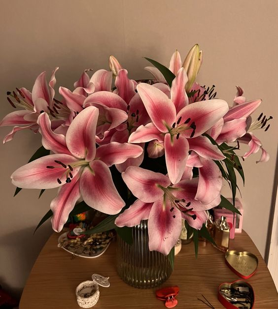

Tulips are spring-blooming perennial herbaceous bulbiferous geophytes in the Tulipa genus. Tulip flowers are usually large, showy, and brightly coloured, generally red, orange, pink, yellow, or white. They often have a different coloured blotch at the base of the tepals, internally. Because of a degree of variability within the populations and a long history of cultivation, classification has been complex and controversial. The tulip is a member of the lily family, Liliaceae, along with 14 other genera, where it is most closely related to Amana, Erythronium, and Gagea in the tribe Lilieae.
A rose is either a woody perennial flowering plant of the genus Rosa, in the family Rosaceae, or the flower it bears. There are over three hundred species and tens of thousands of cultivars. They form a group of plants that can be erect shrubs, climbing, or trailing, with stems that are often armed with sharp prickles. Their flowers vary in size and shape and are usually large and showy, in colours ranging from white through yellows and reds. Most species are native to Asia, with smaller numbers native to Europe, North America, and Northwest Africa. Species, cultivars and hybrids are all widely grown for their beauty and often are fragrant. Roses have acquired cultural significance in many societies. Rose plants range in size from compact, miniature roses to climbers that can reach seven meters in height. Different species hybridize easily, and this has been used in the development of the wide range of garden roses.

Lilium is a genus of herbaceous flowering plants growing from bulbs, all with large and often prominent flowers. They are the true lilies. Lilies are a group of flowering plants which are important in culture and literature in much of the world. Most species are native to the Northern Hemisphere and their range is temperate climates and extends into the subtropics. Many other plants have "lily" in their common names, but do not belong to the same genus and are therefore not true lilies.